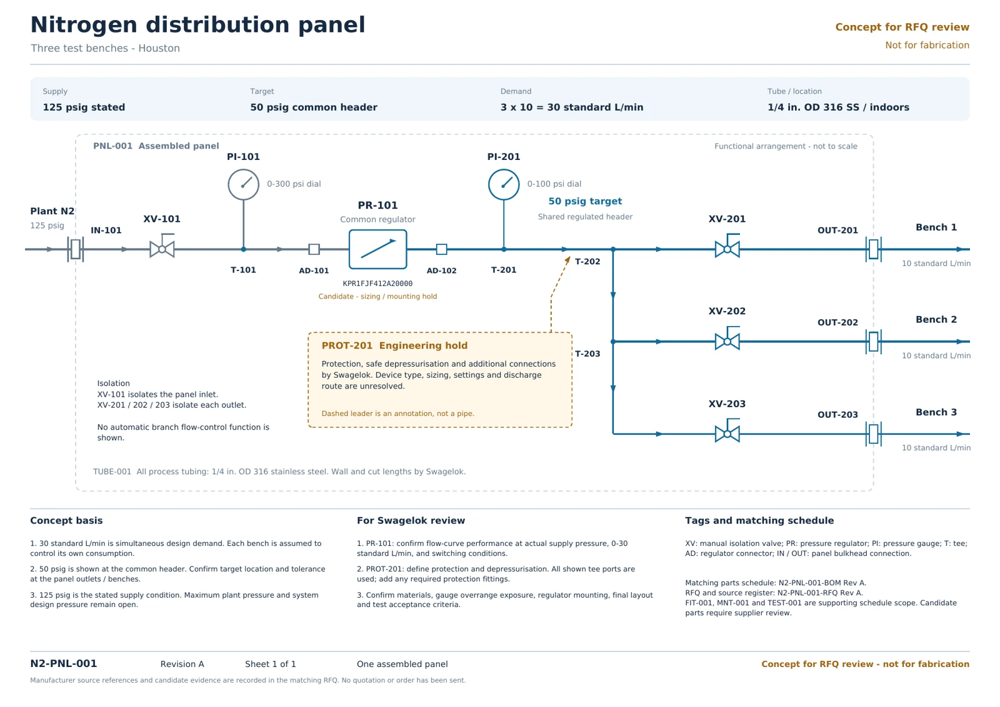
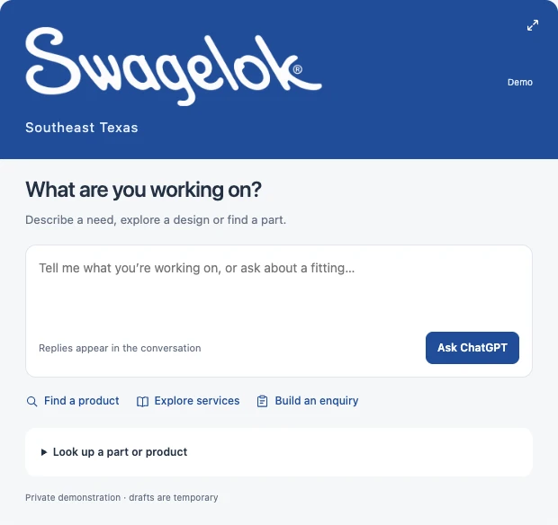

Oxford · 4–7 November 2026
A warm welcome
to Oxford.
We’re looking forward
to hosting you.
Oxford · Grassroots · Engineering

ChatGPTDemo preview

We’ll meet at Grassroots 46 Woodstock Road · Oxford
Image credits
Oxford and Diamond: photography credits. Grassroots: project photography via Bidwells. Demo card and engineering concept: SR3H demonstration.